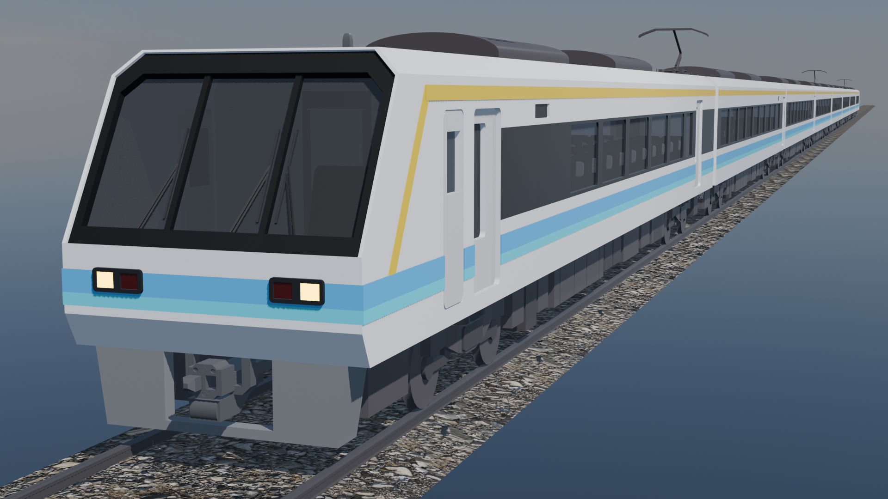
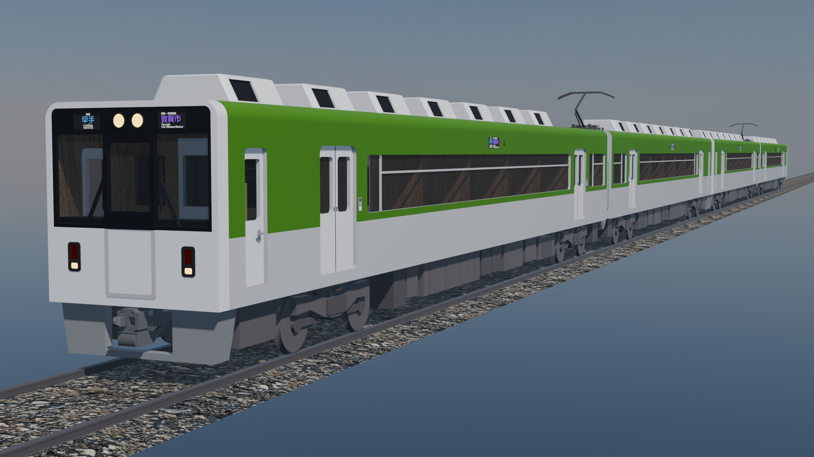

車両紹介
若狭海岸鉄道で活躍している車両を紹介します。
1000形

若狭海岸鉄道の主力車両です。若狭海岸線、山南支線ともに1995年から活躍しており、2路線合わせて16編成が所属しています。基本編成は1両で、繫忙期や通勤時間帯には2両に増結され運行されます。
2000系
若狭海岸鉄道・京橋鉄道・中北鉄道・藤原電鉄等で活躍する特急型車両です。8両固定編成で、2003年から活躍しています。2026年度よりリニューアルが行われる予定です。寝台列車としての改造も予定されています。
京橋鉄道8000系

京橋鉄道早手川線・若狭海岸線で活躍する特急型車両です。6両編成で、2012年から活躍しています。木を基調とした内装が特徴的で、バリアフリーにも特化しています。
京橋鉄道8000系1290番台
京橋鉄道・若狭海岸鉄道・若狭市営電鉄・房野電鉄・若狭南部鉄道・国鉄等で活躍する夜行特急列車です。京橋鉄道8000系を改造した車両で、2両編成・4両編成での運用が想定されています。全席個室で、